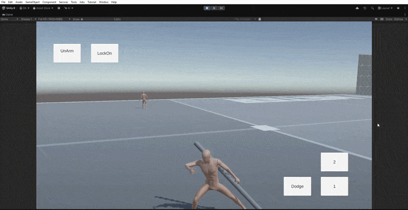

Spark
In progressA third-person melee action-combat prototype built solo in Unity. Core systems — locomotion, a lock-on camera, a priority-based state machine, weapon-layered animation — are working. No enemy AI or combat resolution yet, so there's no playable build.
- Status
- In progress, no build yet
- Made with
- Unity
- Genre
- Action
- Systems
- Movement, lock-on camera, state machine, animation, weapons
- Role
- Solo Developer